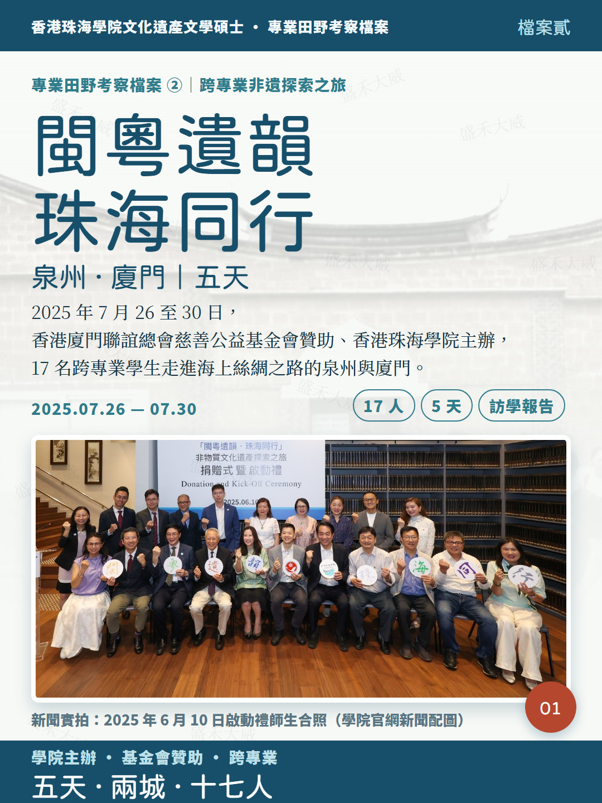
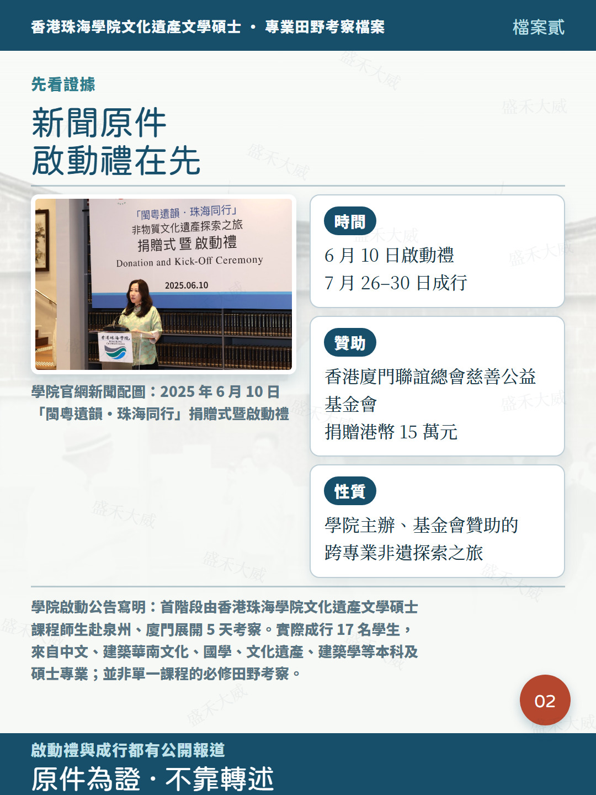
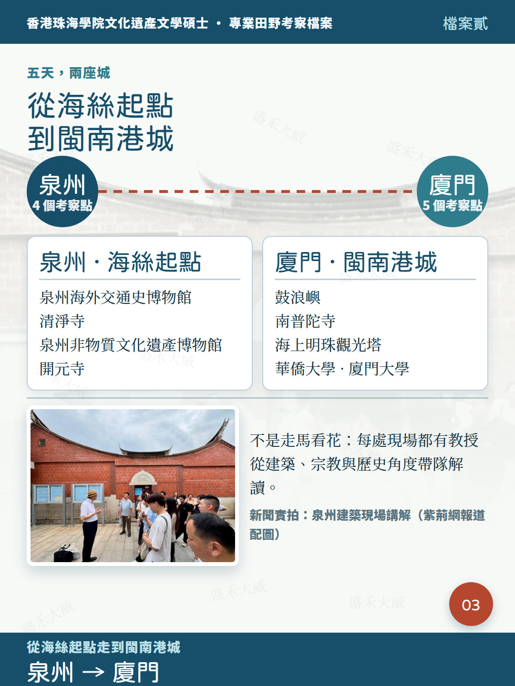
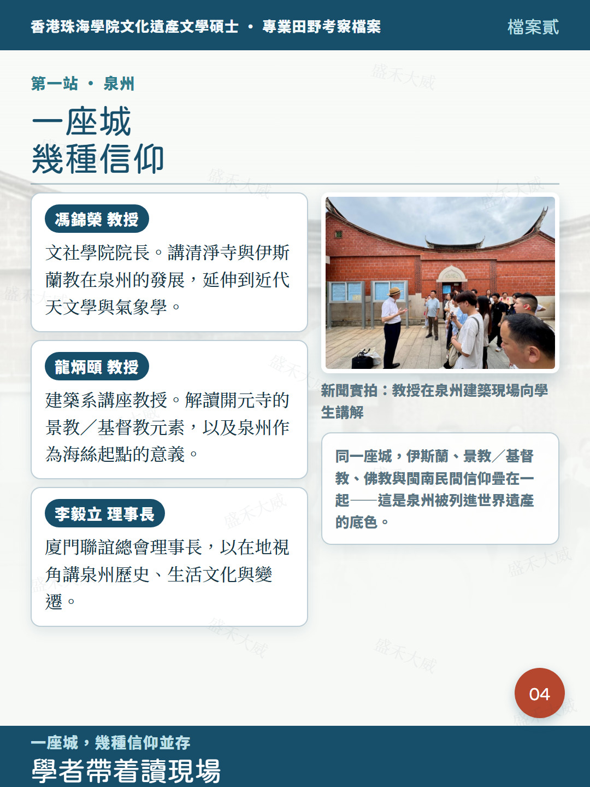
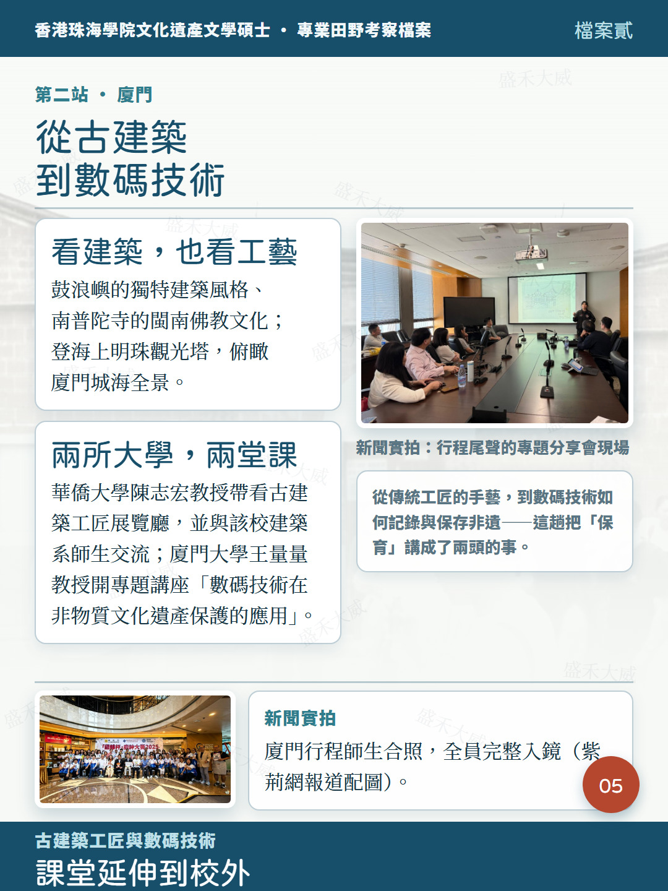
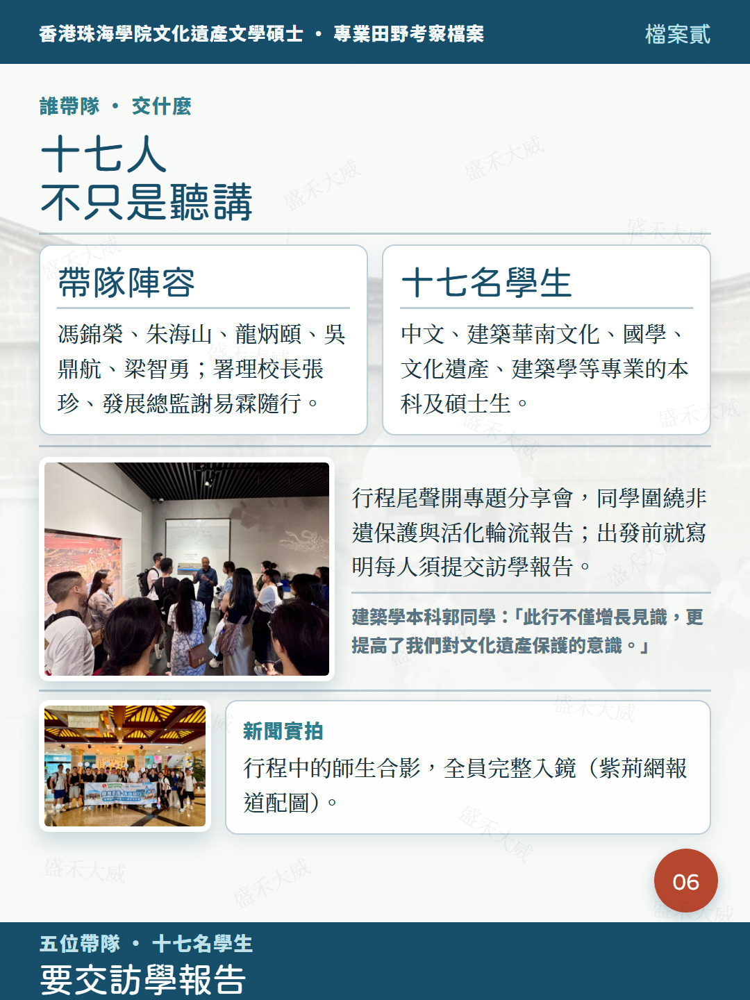
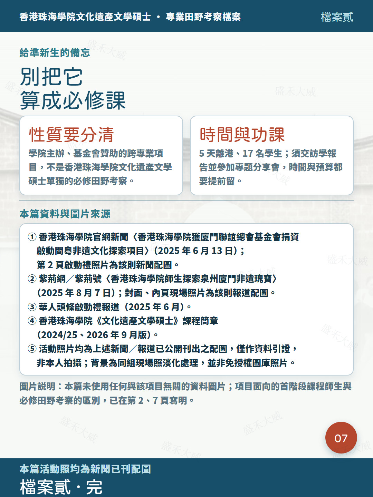

學院主辦、基金會贊助的跨專業項目







我明年 1 月入學香港珠海學院文化遺產文學碩士，最近把往屆田野考察從頭扒了一遍。第一篇寫開平，這篇是泉州、廈門——但先説清楚：兩者不是一回事。
開平是首屆的 3 學分必修田野考察；這一趟「閩粵遺韻·珠海同行」是學院主辦、香港廈門聯誼總會慈善公益基金會捐 15 萬港幣支持的跨專業非遺探索之旅。官網啟動公告寫明，首階段由香港珠海學院文化遺產文學碩士課程師生赴泉州、廈門做 5 天考察；實際成行 17 名學生，來自中文、建築華南文化、國學、文化遺產、建築學等本科及碩士專業。別把它算進必修學分，但現場密度一點不低。
2025 年 6 月 10 日校內辦捐贈式暨啟動禮，7 月 26 至 30 日成行，五天兩城。帶隊有文社學院院長馮錦榮、理工學院院長朱海山、建築系講座教授龍炳頤、吳鼎航與梁智勇博士；署理校長張珍、發展總監謝易霖隨行，廈門聯誼總會理事長李毅立負責在地講解。
泉州走了海外交通史博物館、清淨寺、非遺館和開元寺。妙的是解讀角度：馮錦榮從清淨寺講伊斯蘭教在泉州的發展，延伸到近代天文學與氣象學；龍炳頤講開元寺的景教／基督教元素，拆解泉州作為海上絲路起點的意義。一座城疊着幾種信仰，這種現場書本給不了。
廈門除鼓浪嶼建築、南普陀寺、海上明珠觀光塔，還排了兩所大學：華僑大學陳志宏教授帶看古建築工匠展覽廳並與建築系師生交流；廈門大學王量量教授開講「數碼技術在非物質文化遺產保護的應用」。從工匠手藝到數碼保存，兩頭都碰到了。
尾聲是專題分享會，同學圍繞非遺保護與活化輪流報告，出發前就寫明每人須交訪學報告。建築學本科郭同學那句「此行不僅增長見識，更提高了我們對文化遺產保護的意識」。
給準新生三條：
1. 性質分清，不是必修田野考察，別算進 3 學分
2. 五天離港、17 人跨專業，時間與預算提前留
3. 要交訪學報告，不是走完就結束
資料來自學院官網新聞與紫荊網成行報道，出處在圖 7。這組現場照都是當年新聞已刊配圖，不是我拍的，也沒拿無關風景湊數。
说明：本页图卡为小红书发布版本，采用港式繁体；活动照片为新闻／报道已刊配图，仅作资料引证。文中凡提及该专业，均使用完整名称「香港珠海學院文化遺產文學碩士」。